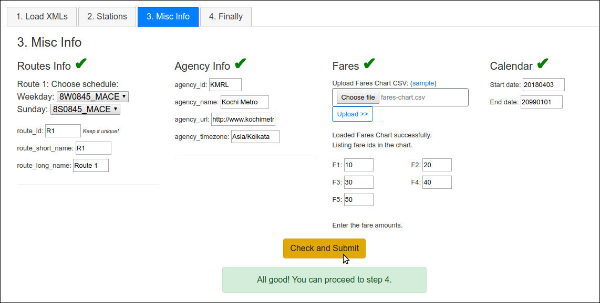

Click here to see a demo video.
This page handles the specific XML format↗ of KMRL. There are some files to upload and some settings to set before converting to GTFS. Please make your way through each of the tabs.
- Do remember to enter the password on top right for all actions.Instructions: If the diagnostic check showed that there were Unmapped stops, then edit the stations table below to update. When done, click "Save Changes" button below. That will trigger the diagnostic check once again.
Note: The map will not update with changes you make in the table. Click Save Changes and then it will update.
Add a new station:
⚓Depot Station:
If the XMLs are uploaded, diagnostic check will also be run again.
Upload Fares Chart CSV: (sample)